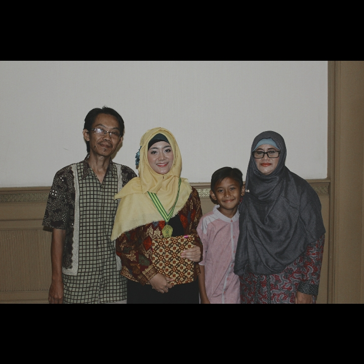
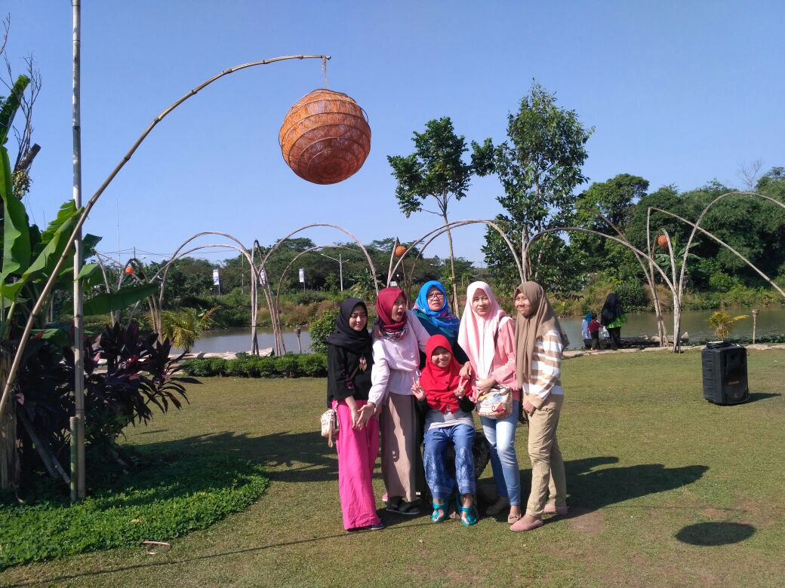

Halooo! Namaku Wafa, iya, dijudul udah keliatan, kan ? heheh. seperti judulnya, aku akan menceritakan sedikit tentang keluargaku! aku punya seorang ibu dan seorang ayah, iya, seperti keluarga kecil pada umumnya. Dan aku mempunyai seorang adik laki-laki.
---My Parents---

Ayah ku kini sudah berhenti dari tempat kerjanya dulu, dan sekarang mempunyai usaha sendiri, yang alhamdulillah sudah berjalan. Ibuku seorang ibu rumah tangga. Yaa seperti ibu rumah tangga pada umumnya, terbayang kan ? tapi terkadang ikut membantu mengelola usaha ayah ku juga, hebat kan!
---My Brother---
Aku mempunyai 1 orang adik laki-laki, Muhammad Hazmi Hikam, namanya. Sekarang dia duduk dikelas 5 SD. Dia senang banget main bola. Pokoknya, segala sesuatu yang berkaitan dengan bola, dia suka! Dia kelahiran Cikarang, Bekasi. rentang umurku dengan nya cukup jauh, sekitar 6 tahunan.
---My Grandma&Grandpa---
Karena sekarang aku sekolah di SMAKBO, jadi aku tinggal dengan nenek dan kakek ku diBogor, orangtua dan adikku tinggal diBekasi. Setiap dua minggu sekali mereka datang ke Bogor, terkadang karna memang ada suatu hal yang harus orangtuaku urus, atau yaa sekedar menjenguk aku juga nenek dan kakekku.
---My Cousins---

kalau yang ini, aku dan sepupu-sepupuku. Rentang umur kami sebenarnya tidak begitu jauh, tapi aku paling dekat dengan dia, perempuan persis disebelahku. Nurul namanya, sekarang dia sudah kuliah, di Institut Pertanian Bogor. Dia salah satu orang yang mengenalkanku dengan sekolah tercintaku sekarang, iya, SMAKBO. Dulu, sebelum aku masuk SMAKBO dan dia belum menjadi mahasiswa IPB, aku sering bermain dengan dia, pergi berdua atau sekedar mengobrol dirumah saja.
Mungkin sekian dulu yah, c u!